第01讲 生活中的立体图形
第01讲 生活中的立体图形

课程标准 | 学习目标 |
①例题图形的认识 ②点、线、面、体的关系 | 1．认识常见几何体的基本特征，能对这些几何体进行正确的识别和简单的分类； 2．通过丰富的实例，进一步认识点、线、面，了解有关点、线及某些平面图形的一些简单性质； |

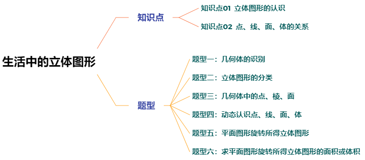

知识点01 立体图形的认识
1.有些几何图形（如长方体、正方体、圆柱、圆锥、棱柱、棱锥、球等）的各部分不都在同一个平面内，这就是立体图形．
2.立体图形分类：除了按照柱体、锥体、球分类，也可以按照围成几何体的面是否有曲面划分：①有曲面：圆柱、圆锥、球等；②没有曲面：棱柱、棱锥等.
3.棱柱的有关概念及其特征:
①在棱柱中，相邻两个面的交线叫做棱，相邻两个侧面的交线叫做侧棱，棱柱所有侧棱长都相等，棱柱的上下底面的形状、大小相同，并且都是多边形；棱柱的侧面形状都是平行四边形.
②棱柱的顶点数、棱数和面数之间的关系：底面多边形的边数n确定该棱柱是n棱柱，它有2n个顶点，3n条棱，n条侧棱，有n+2个面，n个侧面.
【即学即练1】
1．（2023七年级上·全国·专题练习）将图中的几何体进行分类，并说明理由．

【答案】见解析．
【分析】首先要确定分类标准，可以按组成几何体的面的平或曲来划分，也可以按柱、锥、球来划分．
【详解】解：若按形状划分：（1）（2）（6）（7）是一类，组成它的各面全是平面；（3）（4）（5）是一类，组成它的面至少有一个是曲面．
若按构成划分：（1）（2）（4）（7）是一类，是柱体；（5）（6）是一类，即锥体；（3）是球体．
【点睛】本题主要考查了几何体的分类，解题的关键在于先根据立体图形的底面的个数，确定它是柱体、锥体还是球体，再根据其侧面是否为多边形来判断它是圆柱(锥)还是棱柱(锥)．
2．（23-24七年级上·全国·课后作业）如图四个几何体分别是三棱柱、四棱柱、五棱柱和六棱柱，三棱柱有5个面，9条棱，6个顶点，观察图形，填写下面的空．
(1)四棱柱有________个面，________条棱，________个顶点．
(2)六棱柱有________个面，________条棱，________个顶点．
(3)由此猜想 棱柱有________个面，________条棱，________个顶点．
棱柱有________个面，________条棱，________个顶点．
(4)你发现棱柱的面数、棱数与顶点数之间存在怎样的数量关系？
【答案】(1)6，12，8
(2)8，18，12
(3)
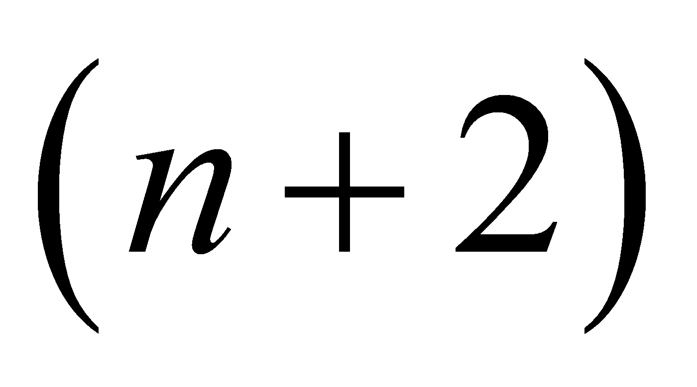
， ，
，
(4)棱柱的面数+顶点数-棱数
【分析】结合已知三棱柱、四棱柱、五棱柱和六棱柱的特点，可知棱柱一定有（
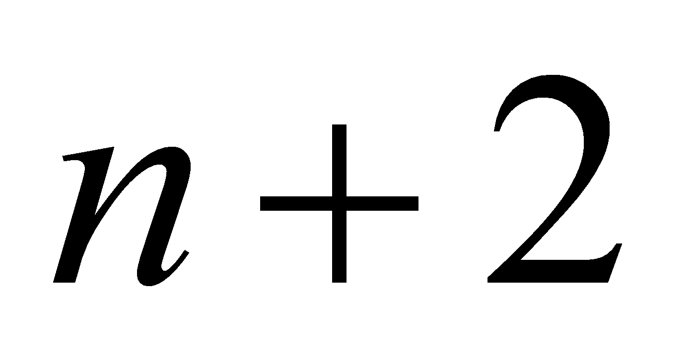
）个面，条棱和个顶点．【详解】（1）解：四棱柱有6个面，12条棱，8个顶点；
故答案为：6，12，8；
（2）解：六棱柱有8个面，18条棱，12个顶点；
故答案为：8，18，12；
（3）解：由此猜想n棱柱有（）个面，条棱，个顶点；
故答案为：，，；
（4）解：棱柱有（）个面，条棱，个顶点，
所以面数、棱数与顶点数之间存在的数量关系是：棱柱的面数+顶点数-棱数．
【点睛】此题考查了认识立体图形，熟记常见棱柱的特征，可以总结一般规律：棱柱有（）个面，条棱和个顶点．
知识点02 点、线、面、体的关系
①体与体相交成面，面与面相交成线，线与线相交成点．
②点动成线，线动成面，面动成体．
③点、线、面、体组成几何图形，点、线、面、体的运动组成了多姿多彩的图形世界．
【即学即练1】
1．（23-24七年级上·山东青岛·阶段练习）下雨时汽车的雨刷把玻璃上的雨水刷干净，这说明 ；圆规在纸上划过会留下一个封闭的圆，这说明 ；在桌面上飞快的旋转一枚硬币就会看到一个球，这说明 ．
【答案】 线动成面 点动成线 面动成体
【分析】根据点动成线，线动成面，面动成体回答即可．
【详解】下雨时汽车的雨刷把玻璃上的雨水刷干净，这说明线动成面；圆规在纸上划过会留下一个封闭的圆，这说明点动成线；在桌面上飞快的旋转一枚硬币就会看到一个球，这说明面动成体．
故答案为：线动成面，点动成线，面动成体．
【点睛】本题考查了点、线、面、体，正确理解点线面体的概念是解题的关键．
2．（23-24七年级上·河南郑州·阶段练习）如图，已知 （即直角三角形
（即直角三角形 ）的两条直角边分别为
）的两条直角边分别为 ，
， ，以该三角形的一条直角边所在直线为轴，将其旋转一周，形成什么几何体？并求其体积．（结果保留
，以该三角形的一条直角边所在直线为轴，将其旋转一周，形成什么几何体？并求其体积．（结果保留 ）
）

【答案】绕它的一条直角边旋转一周，形成的几何体是圆锥，得到的几何体的体积是
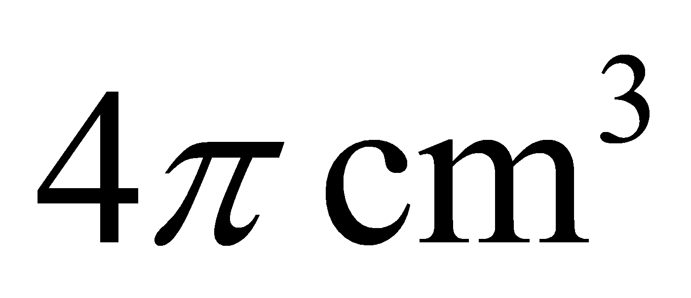
或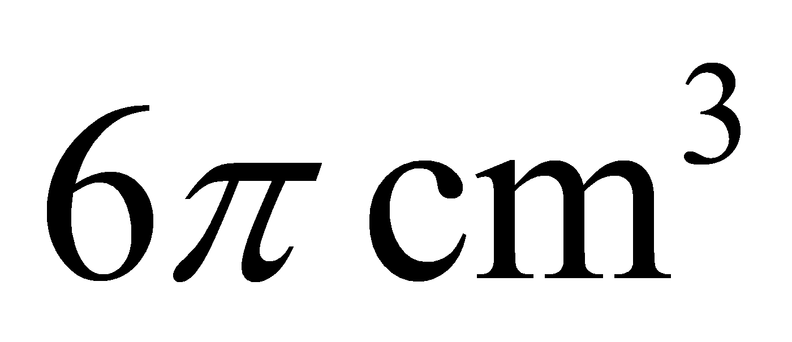
【分析】分两种情况讨论：①以
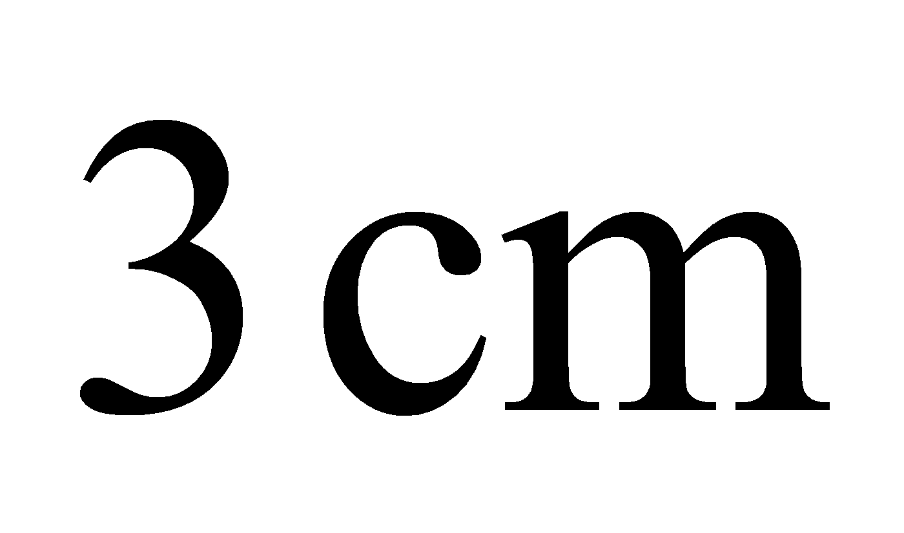
的直角边为轴旋转；②以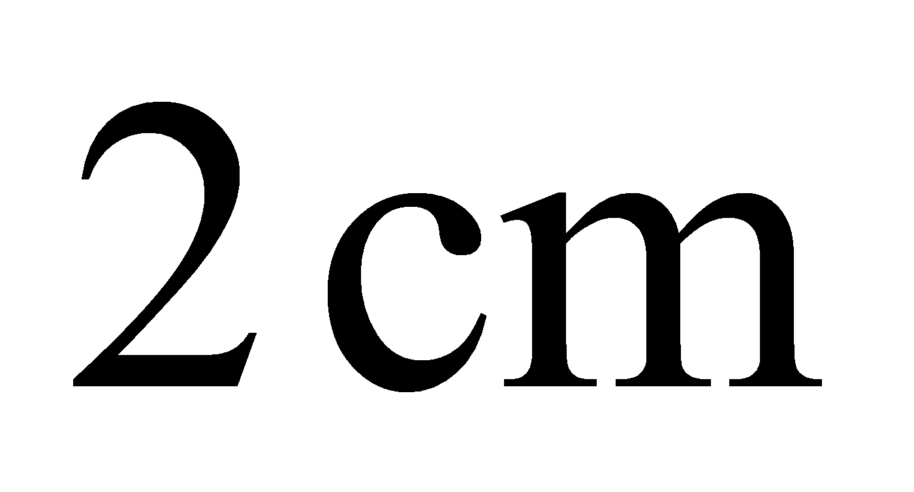
的直角边为轴旋转，得到的几何体为圆锥，再利用圆锥的体积公式即可得到答案．【详解】解：以三角形的一条直角边所在直线为轴，将其旋转一周，形成的几何体是圆锥；
①以的直角边为轴旋转，得到的是一个底面半径为，高为的圆锥，
体积是：
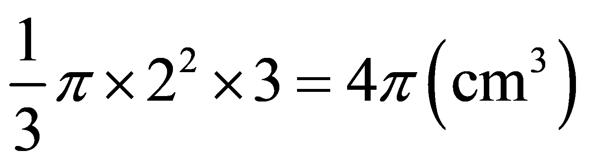
，②以的直角边为轴旋转，得到的是一个底面半径为，高为的圆锥，
体积是：
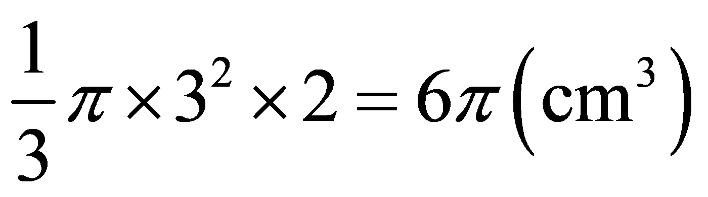
，答：绕它的一条直角边旋转一周，形成的几何体是圆锥，得到的几何体的体积是或．
【点睛】本题考查了点、线、面、体，圆锥的体积公式，解题关键是理解点、线、面、体，熟记圆锥体积公式．

题型一：几何体的识别
【典例1】（23-24七年级上·浙江台州·期末）下列实物中，能抽象成圆柱体的是（ ）
A． B． C．
B． C． D．
D．
【答案】C
【分析】本题考查圆柱体的识别，根据常见几何体的特征逐项判断即可．
【详解】解：A，抽象出来是六棱柱，不合题意；
B，抽象出来是球，不合题意；
C，抽象出来是圆柱，符合题意；
D，抽象出来是圆锥，不合题意；
故选：C．
【变式1】（2024·河南周口·三模）分别观察下列几何体，其中有曲面的是（ ）
A． B． C． D．
D．
【答案】D
【分析】本题考查了认识立体图形，熟练掌握每一个几何体围成的面是平面还是曲面是解题的关键．根据图形观察，围成立体图形的各个面是平面还是曲面逐一判断即可．
【详解】解：结合图形特征，圆柱是由平面和曲面围成，三棱柱、正方体、长方体都是由平面围成的，
 只有D选项是含有曲的面的图形，
只有D选项是含有曲的面的图形，
故选：D．
【变式2】（23-24七年级上·陕西汉中·期末）下列标注的图形名称与图形不相符的是（ ）
A．
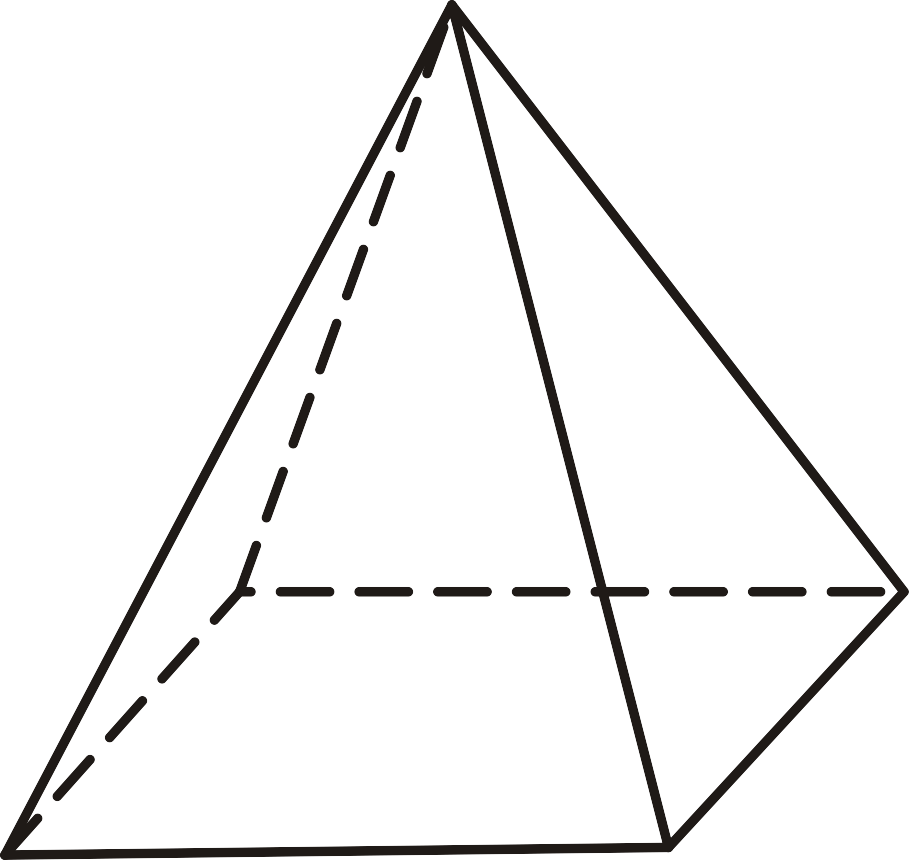
四棱锥B． 圆柱C．
圆柱C． 四棱柱D．
四棱柱D．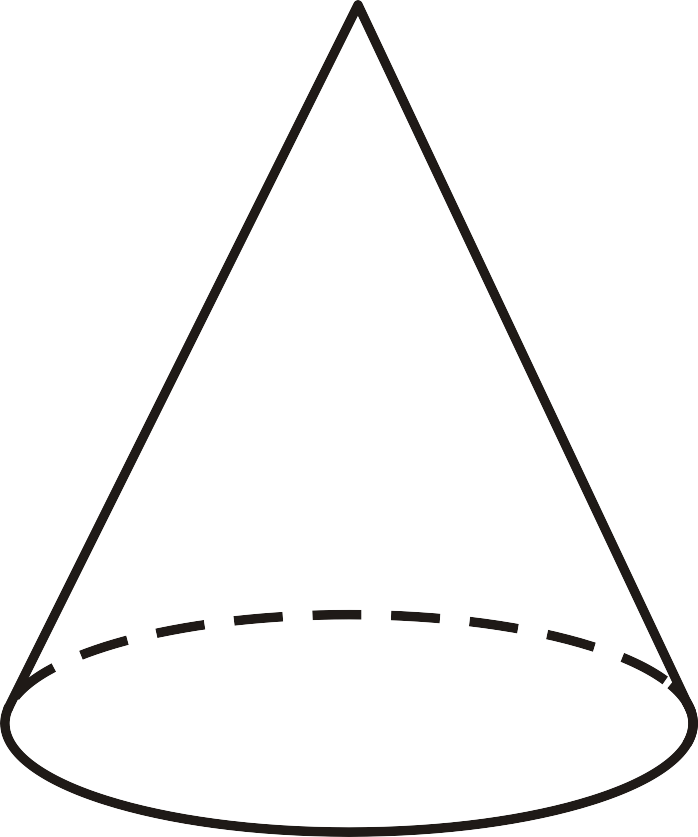
三棱锥【答案】D
【分析】本题考查了认识立体图形，熟练掌握每一种几何体的特征是解题的关键．
【详解】解：A． 是四棱锥，故A不符合题意；
B． 是圆柱，故B不符合题意；
C． 是四棱柱，故C不符合题意；
D． 是圆锥，故D符合题意．
故选：D．
【变式3】（23-24七年级上·福建泉州·阶段练习）下列图形属于棱柱的有（ ）
A．1个 B．3个 C．4个 D．5个
【答案】C
【分析】本题考查棱柱的定义，掌握柱体的基本特征是关键．根据棱柱的定义和特点进行判断即可．
【详解】解：属于棱柱的有：第一个，第二个，第四个是四棱柱，最后一个是五棱柱，
故选C
【变式4】（23-24七年级上·全国·课堂例题）把下列物体与其对应的立体图形连接起来：

【答案】见解析
【分析】根据立体图形的形体特征进行判断即可．
【详解】解： 圆柱体的笔筒对应圆柱体；冰激凌对应圆锥；正方体盒子对应正方体；足球对应球；长方体肥皂盒对应长方体；如图所示：
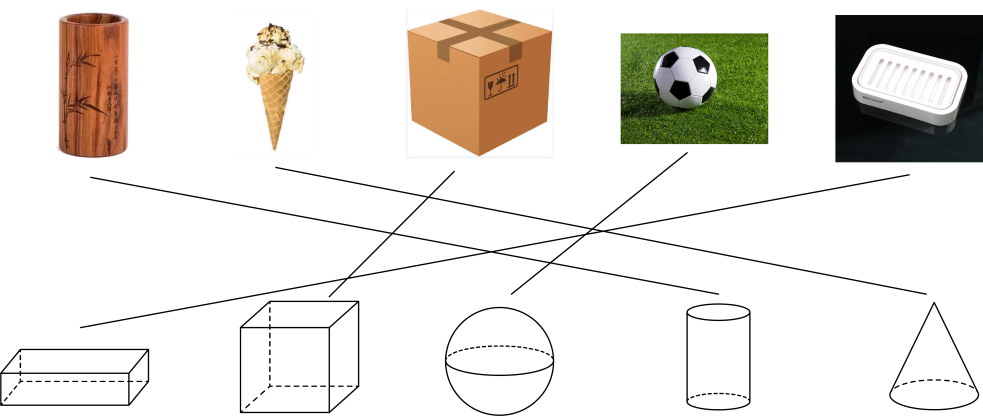
．【点睛】本题考查认识立体图形，掌握各种几何体的形体特征是正确判断的前提．
题型二：立体图形的分类
【典例2】（23-24七年级上·广东佛山·阶段练习）指出如图所示的立体图形中的柱体、锥体、球．
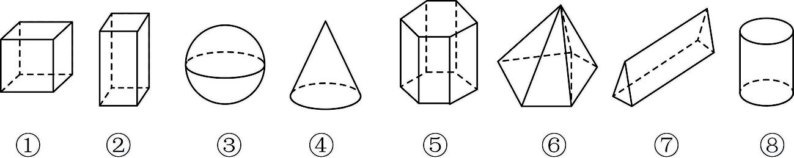
柱体：___________________________
锥体：___________________________
球体：___________________________（填序号）
【答案】①②⑤⑦⑧；④⑥；③
【分析】柱体的特点：有两个面互相平行且大小相同，余下的每个相邻两个面的交线互相平行； 锥体的特点：有1个顶点，一个底面，只有1条高； 篮球、足球都是球，球是由一个面所围成的几何体，据此可得答案．
【详解】解：柱体为：①②⑤⑦⑧；
锥体为：④⑥；
球体为：③．
故答案为：①②⑤⑦⑧；④⑥；③．
【点睛】本题主要考查了柱体，锥体，球体，熟练掌握柱体，锥体，球体的特点是解题的关键．
【变式1】（22-23七年级上·广东佛山·阶段练习）如图，下列几何体，是柱体的有 ，球体的有 ．（填序号）
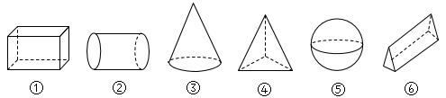
【答案】 ①②⑥ ⑤
【分析】根据立体图形的特征即可得到答案．
【详解】解：柱体的有①②⑥；球体有⑤．
故答案为：①②⑥，⑤
【点睛】本题考查了认识立体图形，熟知立体图形的特征并知道他们的名称是解题关键．
【变式2】下列是我们常见的几何体，按要求将其分类（只填写编号）．
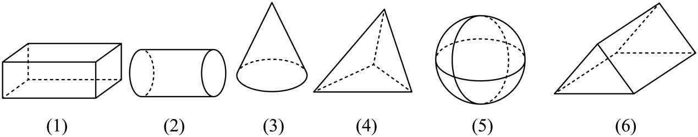
(1)如果按“柱、锥、球”来分，柱体有______，锥体有______，球有______；
(2)如果按“有无曲面”来分，有曲面的有______，无曲面的有______．
【答案】(1)①②⑥；③④；⑤
(2)②③⑤；①④⑥
【分析】（1）根据立体图形的特点从柱体的形状特征考虑．
（2）根据面的形状特征考虑．
【详解】（1）解：∵（1）是四棱柱，（2）是圆柱，（3）是圆锥，（4）是棱锥，（5）是球，（6）是三棱柱，
∴柱体有（1），（2），（6），锥体有（3），（4），球有（5），
故答案为：（1），（2），（6）；（3），（4）；（5）；
（2）∵（2）（3）（5）有曲面，其它几何体无曲面，
∴按“有无曲面”来分，有曲面的有（2），（3），（5），无曲面的有：（1），（4），（6），
故答案为：（2），（3），（5）；（1），（4），（6）．
【点睛】本题考查了认识立体图形，解决本题的关键是认识柱体的形状特征．
【变式3】（23-24七年级上·全国·课堂例题）根据图回答问题：
(1)与图②具有共同特征的图形有哪些？说出共同特征是什么；
(2)其他图形中具有共同特征的图形有哪些？说出共同特征是什么．
【答案】(1)图⑤⑦与图②具有共同特征，共同特征是它们都是锥体（答案不唯一）
(2)图①③④⑥具有共同特征，共同特征是它们都是柱体（答案不唯一）
【分析】（1）由于图②、⑤、⑦都为锥体，所以它们具有共同特征；
（2）由于图①、③、④、⑥它们都是柱体，所以它们具有共同特征．
【详解】（1）解：图⑤、⑦与图②具有共同特征，共同特征是它们都是锥体（答案不唯一）；
（2）解：图①、③、④、⑥具有共同特征，共同特征是它们都是柱体（答案不唯一）．
【点睛】本题考查了认识立体图形：有些几何图形（如长方体、正方体、圆柱、圆锥、球等）的各部分不都在同一个平面内，这就是立体图形．
题型三：几何体中的点、棱、面
【典例3】（23-24六年级上·山东烟台·期中）五棱柱是由 个面围成的，有 个顶点，共有 条棱．
【答案】 7 

【分析】本题主要考查立体图形的认识，解答此题首先要理解五棱柱的概念和特性，柱体中，面与面相交成棱，棱与棱相交成顶点．根据五棱柱的概念和特性即可解．
【详解】解：五棱柱如图所示：
五棱柱是由7个面围成的，有个顶点，共有条棱．
故答案为：7；10；15．
【变式1】（23-24七年级上·山东菏泽·阶段练习）一个棱柱有12条棱，那么它的底面是 边形、共有 个顶点、 个面．
【答案】 四 8 6
【分析】
本题考查了棱柱的相关知识，解答关键是熟记一个n棱柱棱的条数与n的关系．
根据一个n棱柱有 条棱，
条棱， 个顶点，
个顶点， 个面，即可求解．
个面，即可求解．
【详解】解：∵一个棱柱有12条棱，
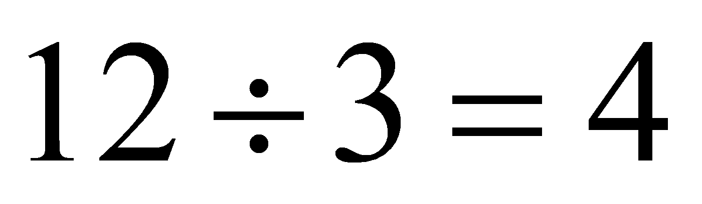
，∴该棱柱为四棱柱，
∴底面是四边形，共
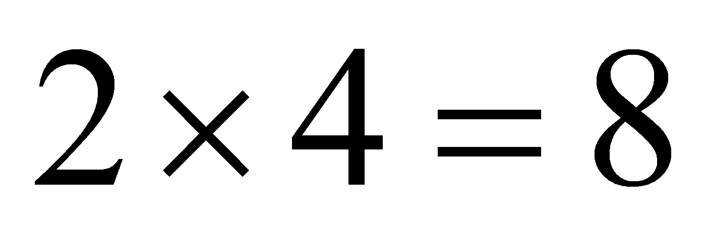
个顶点，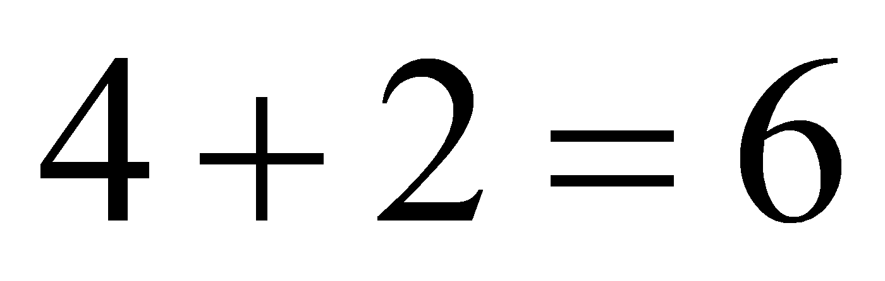
个面．故答案为：四，8，6．
【变式2】（23-24七年级上·江西吉安·阶段练习）观察下列多面体，并把表格补充完整．
名称 | 三棱柱 | 四棱柱 | 五棱柱 | 六棱柱 |
图形 | 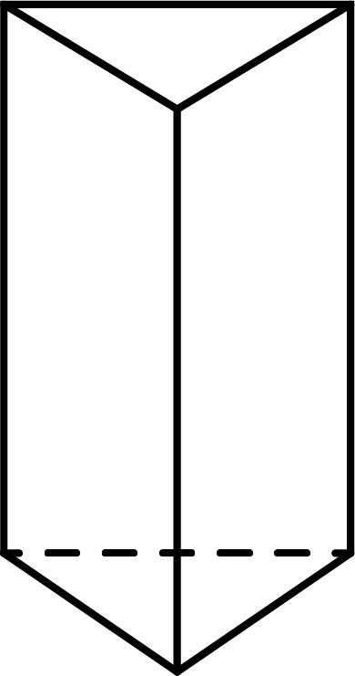 | 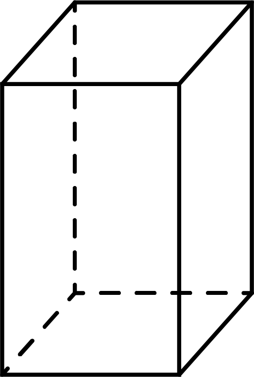 | 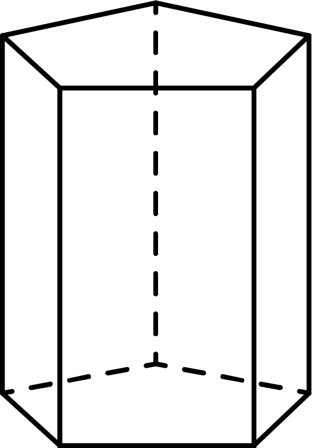 | 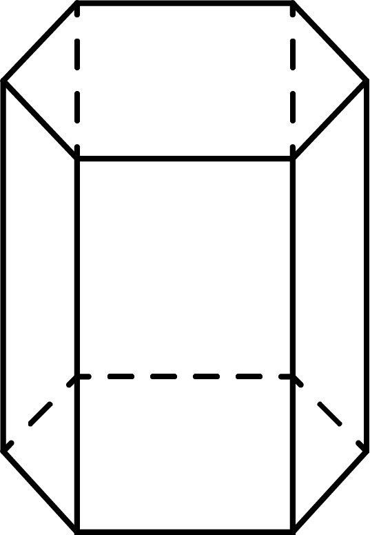 |
顶点数a | 6 | 10 | 12 | |
棱数b | 9 | 12 | ||
面数c | 5 | 8 |
(1)完成表格中的数据；
(2)根据表格中的规律判断，十四棱柱共有 个面，共有 个顶点，共有 条棱；
(3)若某个棱柱由30个面构成，则这个棱柱为 棱柱．
【答案】(1)见解析
(2)16，28，42
(3)二十八
【分析】本题考查规律型问题，欧拉公式等知识，解题的关键是学会从特殊到一般探究规律的方法．
（1）通过认真观察图象，即可一一判断；
（2）根据面、顶点、棱的定义一一判断即可；
（3）根据棱柱的定义判定即可．
【详解】（1）解：填表如下：
名称 | 三棱柱 | 四棱柱 | 五棱柱 | 六棱柱 |
图形 | ||||
顶点数 | 6 | 8 | 10 | 12 |
棱数 | 9 | 12 | 15 | 18 |
面数 | 5 | 6 | 7 | 8 |


（2）解：根据上表中的规律可得： 棱柱共有
棱柱共有 个面，共有
个面，共有 个顶点，共有
个顶点，共有 条棱，
条棱，
所以十四棱柱共有16个面，共有28个顶点，共有42条棱；
故答案为：16，28，42；
（3）解：若某个棱柱由30个面构成，则这个棱柱为二十八棱柱；
故答案为：二十八．
【变式3】15．（23-24七年级上·河南平顶山·阶段练习）仔细观察下面的正四面体、正六面体、正八面体，解决下列问题：

(1)填空：
①正四面体的顶点数
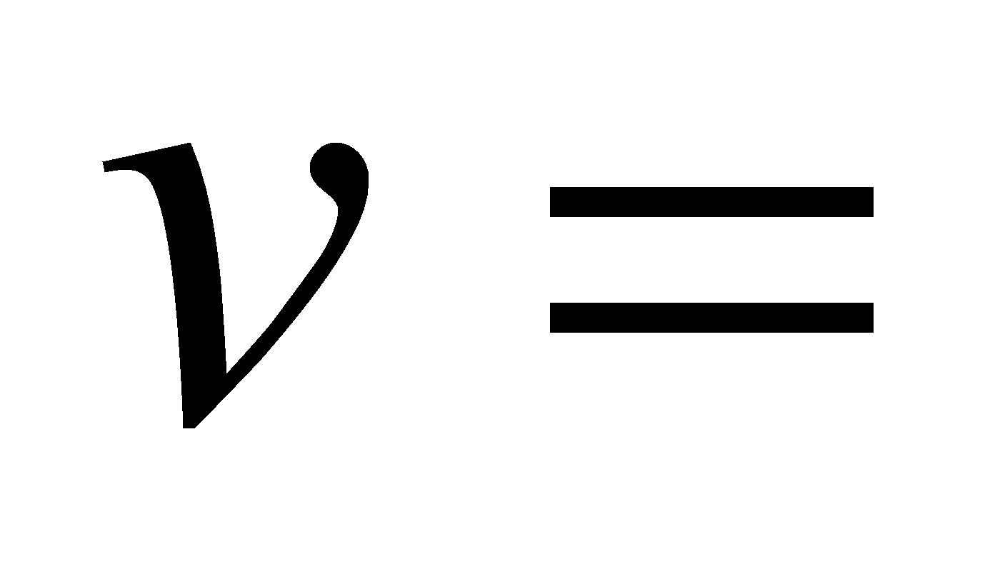
______，面数 ______，棱数
______，棱数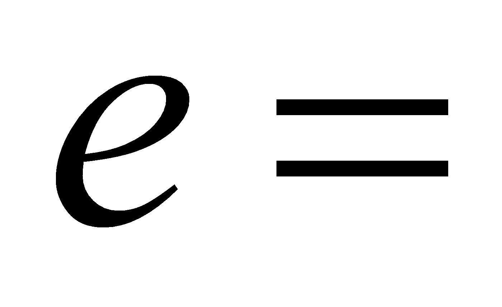
______；②正六面体的顶点数______，面数______，棱数______；
③正八面体的顶点数______，面数______，棱数______；
(2)若将多面体的顶点数用v表示，面数用f表示，棱数用e表示，则v，f，e之间的数量关系可用一个公式来表示：________
【答案】(1)①4，4，6；②8，6，12；③6，8，12
(2)
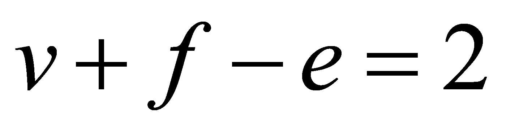
【分析】本题考查的是多面体的定义，关键点在于：多面体指四个或四个以上多边形所围成的立体图形；
（1）观察图形，结合多面体的顶点、面和棱的定义进行填空即可；
（2）根据（1）中，多面体的顶点数，面数和棱数，总结规律可得v，f，e之间的数量关系式；
【详解】（1）①正四面体的顶点数
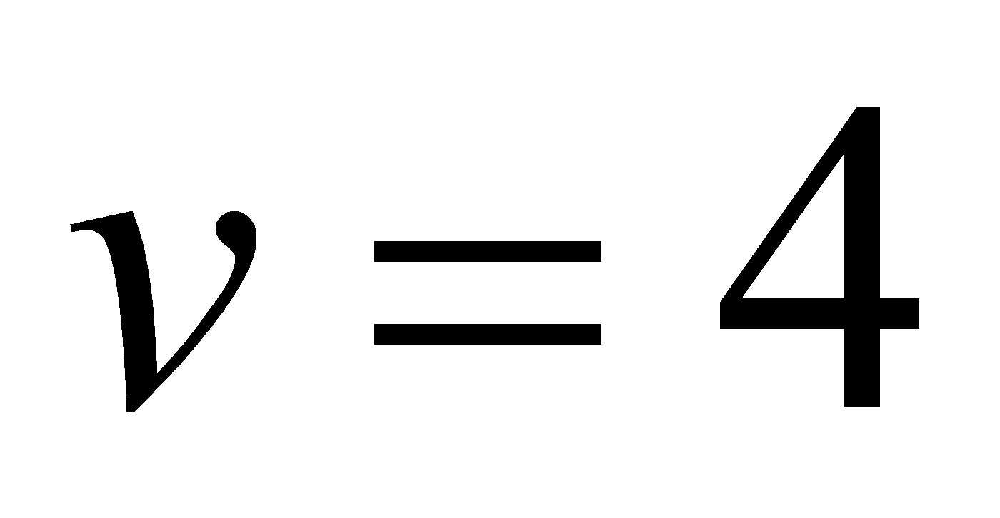
，面数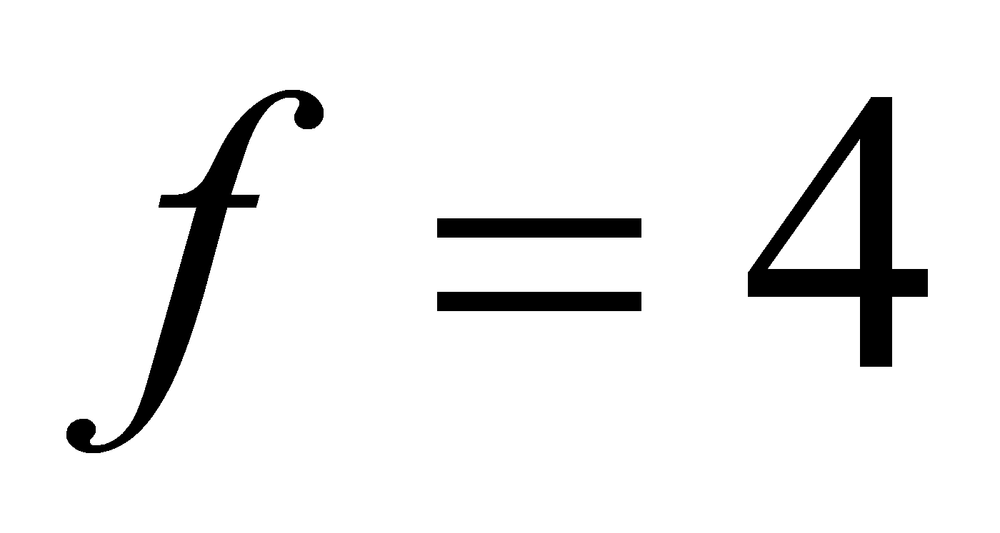
，棱数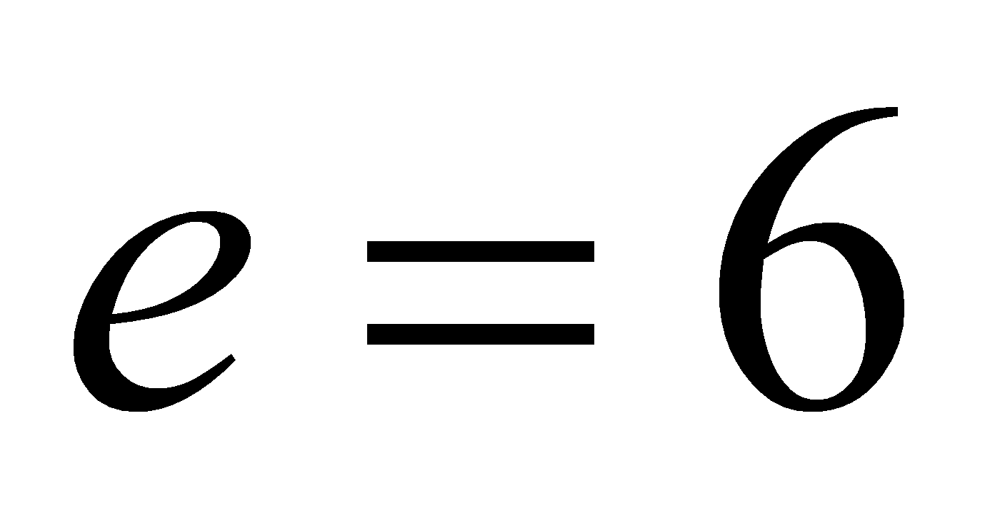
；②正六面体的顶点数
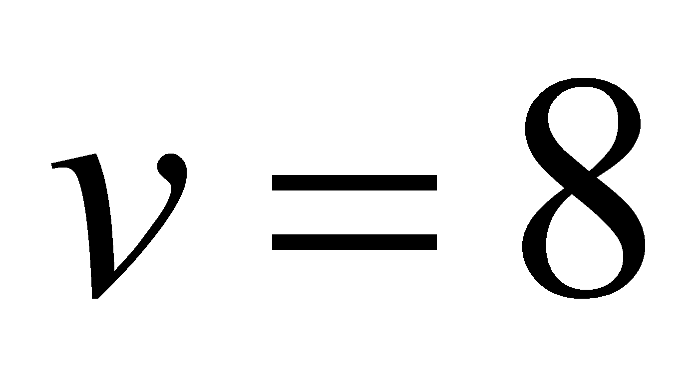
，面数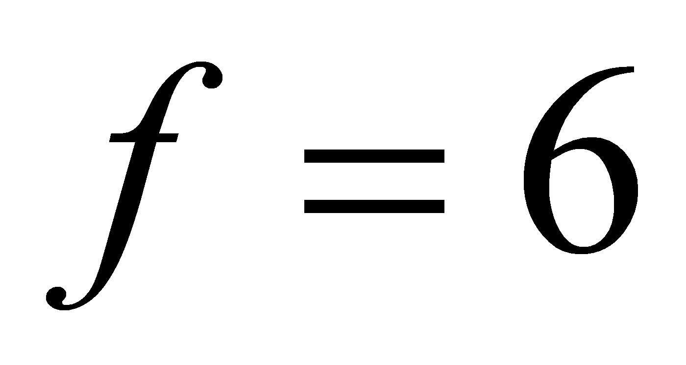
，棱数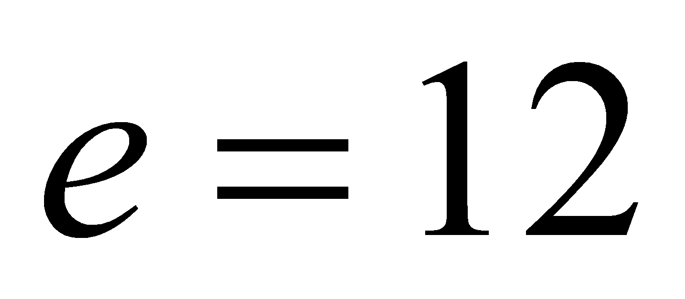
；③正八面体的顶点数
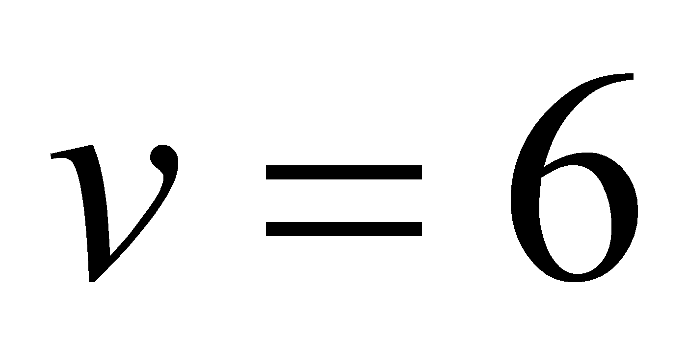
，面数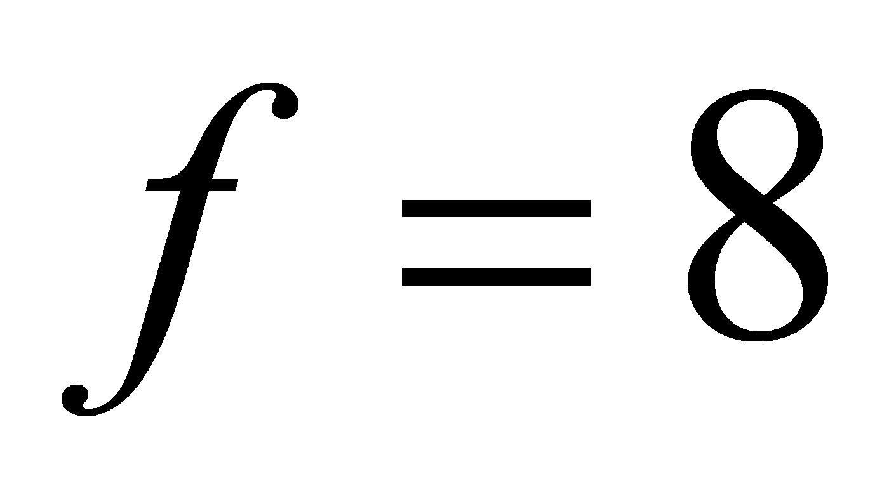
，棱数；故答案为：①4，4，6；②8，6，12；③6，8，12；
（2）根据（1）中数据可得：
①
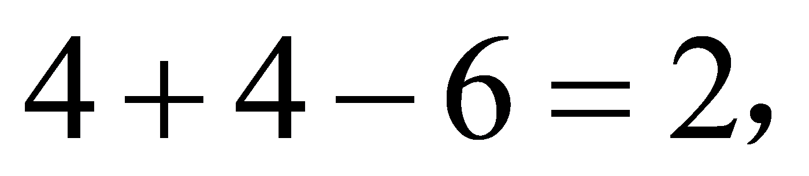
②
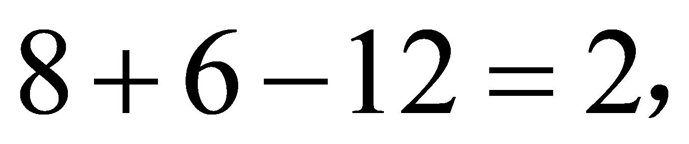
③
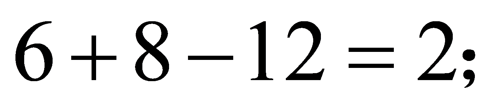
故v，f，e之间的数量关系是：
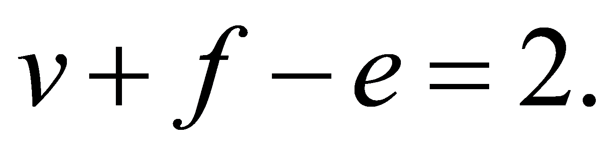
题型四：动态认识点、线、面、体
【典例4】（23-24七年级上·河南许昌·期末）中国扇文化有着深厚的文化底蕴；历来中国有“制扇王国”之称． 如图，打开折扇时，随着扇骨的移动形成一个扇面，这种现象可以用数学原理解释为（ ）

A．点动成线 B．线动成面 C．面动成体 D．两点确定一条直线
【答案】B
【分析】本题考查了线、面的关系，根据题意，结合线动成面的数学原理：某一条线在运动过程中留下的运动轨迹会组成一个平面图形，这个平面图形就是一个面，即可得出答案．熟练掌握线动成面的数学原理是解本题的关键．
【详解】解：打开折扇时，随着扇骨的移动形成一个扇面，这种现象可以用数学原理解释为线动成面，
故选：B．
【变式1】（23-24七年级上·山东德州·期末）朱自清的《春》一文里，在描写春雨时有“像牛毛，像细丝，密密地斜织着”的语句，这里用数学的眼光来看其实是把雨滴看成了 ，把雨看成 ，说明 （ ）
A．点；直线；点动成线 B．点；线；点动成线 C．线；面；线动成面 D．线；面；面动成体
【答案】B
【分析】本题考查点动成线，根据点动成线直接判断即可得到答案；
【详解】解：由题意可得，
这里用数学的眼光来看其实是把雨滴看成了点，把雨看成线，说明点动成线，
故选：B．
【变式2】（23-24七年级上·江苏盐城·阶段练习）“鸣语既过渐细微，映空摇飏如丝飞”是唐代诗人杜甫作品《雨不觉》中的诗句，意为喧哗的雨已经过去，逐渐变得细微，映着天空摇漾如丝的细雨飘飞．诗中描写雨滴下来形成雨丝，用数学语言解释这一现象为 ．
【答案】点动成线
【分析】本题考查了点、线、面、体四者之间的关系，根据点线之间的关系即可求解，熟练掌握基础知识是解题的关键．
【详解】解：数学语言解释这一现象为点动成线，
故答案为：点动成线．
【变式3】（23-24七年级上·贵州贵阳·阶段练习）直角三角形绕它的直角边旋转一周，形成了一圆锥体，说明了 ．（点动成线、线动成面、面动成体）
【答案】面动成体
【分析】本题考查了点、线、面、体；
根据点动成线，线动成面，面动成体进行解答即可．
【详解】解：直角三角形绕它的直角边旋转一周，形成了一圆锥体，说明了面动成体，
故答案为：面动成体．
题型五：平面图形旋转所得立体图形
【典例5】（2024·陕西·中考真题）如图，将半圆绕直径所在的虚线旋转一周，得到的立体图形是（ ）
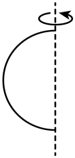
A．
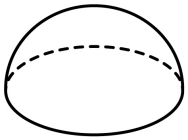
B． C．
C． D．
D．
【答案】C
【分析】本题主要考查了点、线、面、体问题．根据旋转体的特征判断即可．
【详解】解：将一个半圆绕它的直径所在的直线旋转一周得到的几何体是球，
故选：C．
【变式1】（2024·陕西渭南·二模）下列图形分别绕虚线旋转一周，得到的立体图形是圆锥的是（ ）
A． B．
B． C．
C．
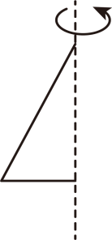
D．
【答案】C
【分析】本题考查了点、线、面、体，理解“点动成线”“线动成面”“面动成体”是解题的关键，根据选项逐项分析判断即可求解．
【详解】解：A. 绕直线l旋转后得到的图形为一个球体；
B.选项中的图形旋转后为圆柱；
C.可得其旋转后的几何体为圆锥；
D.可知其绕直线l旋转后得到的图形为一个圆台；
故选C．
【变式2】（23-24七年级上·贵州贵阳·期中）如图是一个由平面图形绕虚线旋转得到的立体图形，则这个平面图形是（ ）
A． B．
B． C．
C． D．
D．
【答案】A
【分析】本题考查了点、线、面、体——图形的旋转，解题关键在于要有丰富的空间想象能力．图示几何体是由两个圆柱组成的，矩形旋转成圆柱，据此即可求解．
【详解】解：A、图形绕虚线旋转一周，能够得到上下两个圆柱，故选项符合题意；
B、图形绕虚线旋转一周，能够得到上下两个圆柱，且上圆柱有空心，故选项不符合题意．
C、图形绕虚线旋转一周，能够得到上下中下三个圆柱，且上下圆柱有空心，故选项不符合题意；
D、图形绕虚线旋转一周，能够得到上下中下三个圆柱，故选项不符合题意；
故选：A．
【变式3】观察图，把左边的图形绕着给定的直线旋转一周后可能形成的立体图形是（ ）
 A．
A． B．
B．
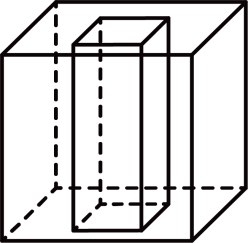
C．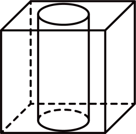
D．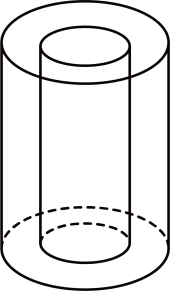
【答案】D
【分析】本题考查了点、线、面、体，关键要注意观察，培养空间想象力，解题的关键是要掌握面动成体的原理；根据面动成体的原理以及空间想象力即可得到答案．
【详解】解：由图形可以看出，左边的长方形的竖直的两个边与已知的直线平行，因而这两条边旋转形成两个柱形表面，因而旋转一周后可能形成的立体图形是一个管状的物体．
故选：D．
【变式4】（23-24七年级上·山东滨州·期末）请把下图中的平面图形与其绕所画直线旋转一周之后形成的立体图形用线连接起来．

【答案】见解析
【分析】本题考查了点线面体，熟记各种图形旋转得出的立体图形是解题关键．直角三角形绕直角边旋转一周得到的立体图形是圆锥，长方形绕一边旋转一周得到的立体图形是圆柱，直角梯形绕如图所示的一边旋转一周得到的立体图形是圆台，半圆绕直径旋转一周得到的立体图形是球．
【详解】解：如图所示：
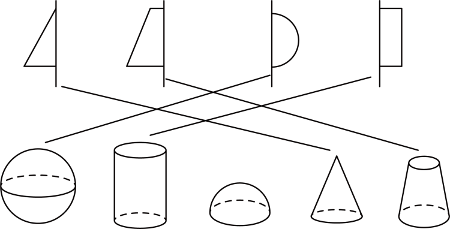
题型六：求平面图形旋转所得立体图形的面积或体积
【典例6】（23-24七年级上·陕西榆林·期中）如图是一张长方形纸片，长方形的长为
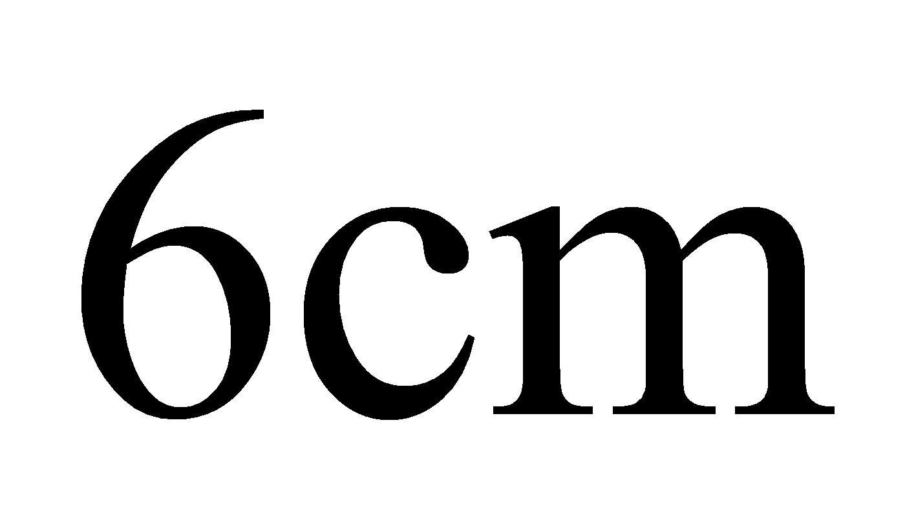
，宽为 ，若将此长方形纸片绕它的一边所在直线旋转一周，得到一个几何体．
，若将此长方形纸片绕它的一边所在直线旋转一周，得到一个几何体．(1)这个几何体的名称是 ，这个现象用数学知识解释为 ；
(2)求得到的这个几何体的体积（结果保留 ）
）
【答案】(1)圆柱，面动成体；
(2)得到的几何体的体积为
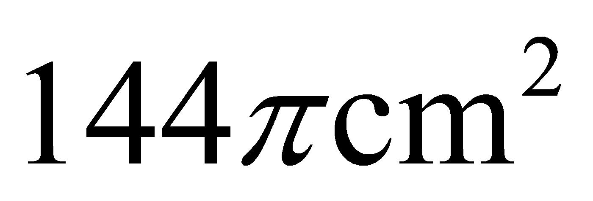
或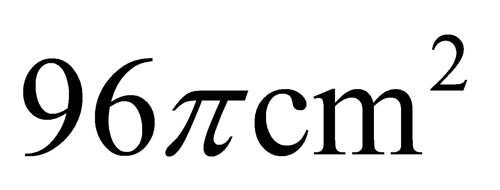
【分析】本题考查几何体的体积以及面动成体；
（1）根据面动成体可知，将长方形纸片绕它的一边所在直线旋转一周，得到的几何体是圆柱；
（2）分两种情况确定出圆柱的底面半径和高，再根据圆柱的体积公式计算即可求解．
【详解】（1）解：将长方形纸片绕它的一边所在直线旋转一周，得到的几何体是圆柱，这个现象用数学知识解释为面动成体，
故答案为：圆柱，面动成体；
（2）①若绕的边所在直线旋转一周，得到的是底面半径为，高为的圆柱，
它的体积为：
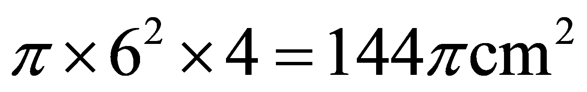
；②若绕的边所在直线旋转一周，得到的是底面半径为，高为的圆柱，
它的体积为：
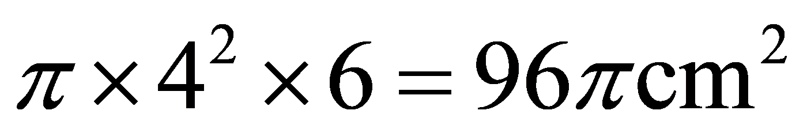
；综上：得到的几何体的体积为或．
【变式1】（2024·陕西西安·二模）如图，某酒店大堂的旋转门内部由三块宽为1.8m、高为3m的玻璃隔板组成．
(1)将此旋转门旋转一周，能形成的几何体是________，这能说明的事实是________（填字母）；
A．点动成线 B．线动成面 C．面动成体
(2)求该旋转门旋转一周形成的几何体的体积．（边框及衔接处忽略不计，结果保留 ）
）
【答案】(1)圆柱；C
(2)
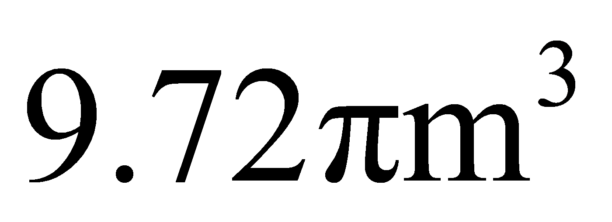
【分析】本题考查了圆柱的体积，平面图形旋转后形成的立方体，
（1）旋转门的形状是长方形；长方形旋转一周，能形成的几何体是圆柱；
（2）根据圆柱体的体积 底面积
底面积 高计算即可．
高计算即可．
【详解】（1）解：∵旋转门的形状是长方形，
∴旋转门旋转一周，能形成的几何体是圆柱，这能说明的事实是面动成体．
故答案为：圆柱；C；
（2）解：该旋转门旋转一周形成的几何体是圆柱，
体积为：．
故形成的几何体的体积是．
【变式2】（2024·陕西渭南·二模）如图，将平面图形甲、乙分别绕轴l、m旋转一周，可以得到立体图形①、②，图形甲是直角边分别为a、2a的直角三角形，图形乙是边长为a的正方形．

(1)立体图形①的名称是_______；
(2)请问立体图形②比立体图形①的体积大多少？(用含a和π的式子表示， 
【答案】(1)圆锥；
(2)立体图形②比立体图形①的体积大 ．
【分析】本题主要考查了圆锥的定义、圆锥的体积、圆柱的体积等知识点，掌握圆锥的相关知识成为解题的关键．
（1）根据立体图形的定义即可解答；
（2）设图形①、②的体积分别为，然后分别求得图形①、②的体积，然后作差即可解答．
【详解】（1）解：以直角三角形的直角边所在直线为旋转轴得到的立体图形为圆锥．
故答案为：圆锥．
（2）解：设图形①、②的体积分别为，
则 ，，
即立体图形②比立体图形①的体积大．
【变式3】（22-23七年级上·福建漳州·期中）如图，是某“粮仓”的示意图，

(1)该“粮仓”是由上面右侧的四幅图中的第______幅图旋转而成；
(2)请你求出该“粮仓”（单位： ）的体积．（结果保留
）的体积．（结果保留 ）
）
【答案】(1)④
(2)“粮仓”的体积为
【分析】本题考查了平面图形旋转后所得的立体图形，几何体的体积．熟练掌握平面图形旋转后所得的立体图形，几何体的体积的计算公式是解题的关键．
（1）根据平面图形旋转后所得的立体图形作答即可；
（2）根据几何体的体积为圆柱与圆锥的体积和计算求解即可．
【详解】（1）解：由题意知，该“粮仓”是由④图旋转而成．
故答案为：④．
（2）解：由题意知，圆柱和圆锥的底面直径为，
圆柱和圆锥的底面半径为 ，
，
又 圆柱的高为，圆锥的高为，
圆柱的高为，圆锥的高为，
“粮仓”的体积为：．
答：“粮仓”的体积为．

一、单选题
1．（23-24七年级上·贵州六盘水·期末）下列学习或生活中的物品，它的形状可以近似的看作圆柱体的是（ ）
A． B．
B． C． D．
C． D．
【答案】A
【分析】本题考查了立体图形的识别，注意几何体的分类，一般分为柱体、锥体和球，柱体又分为圆柱和棱柱，锥体又分为圆锥和棱锥．依次从观察图形，即可得出答案．
【详解】解：A、形状类似圆柱，故符合题意；
B、形状类似长方体，故不符合题意；
C、形状类似圆锥，故不符合题意；
D、形状类似球，故不符合题意．
故选：A．
2．（23-24七年级上·山东德州·期末）朱自清的《春》一文里，在描写春雨时有“像牛毛，像细丝，密密地斜织着”的语句，这里用数学的眼光来看其实是把雨滴看成了 ，把雨看成 ，说明 （ ）
A．点；直线；点动成线 B．点；线；点动成线 C．线；面；线动成面 D．线；面；面动成体
【答案】B
【分析】本题考查点动成线，根据点动成线直接判断即可得到答案；
【详解】解：由题意可得，
这里用数学的眼光来看其实是把雨滴看成了点，把雨看成线，说明点动成线，
故选：B．
3．（23-24七年级上·陕西咸阳·期中）以 为轴旋转一周后得到的立体图形是（ ）
为轴旋转一周后得到的立体图形是（ ）
A． B． C． D．
C． D．
【答案】C
【分析】本题考查了平面图形的旋转，根据矩形绕着它的一条边旋转一周得到的几何体是圆柱，再结合题目中的四个选项即可得出答案，理解平面图形的旋转是解题的关键．
【详解】
解：以为轴旋转一周后得到的立体图形是，
故选： ．
．
4．（23-24七年级上·广东汕头·期末）有下列四个说法：①长方体与正方体都是四棱柱；②三棱锥的侧面都是三角形；③十棱柱有 个面，每个侧面都是长方形；④棱柱的每条棱长可以相等，其中正确的个数有（ ）
个面，每个侧面都是长方形；④棱柱的每条棱长可以相等，其中正确的个数有（ ）
A． 个 B．
个 B． 个 C．
个 C． 个 D．
个 D． 个
个
【答案】C
【分析】本题考查立体图形，棱柱的上下两个面平行，侧面是平行四边形；棱锥的底面是一个多边形，其余各面是有一个公共顶点的三角形；结合本题所给的说法，根据上述知识即可求解．掌握棱柱和棱锥的定义是解题的关键．
【详解】解：①长方体与正方体都是四棱柱，该说法正确；
②三棱锥的侧面都是三角形，该说法正确；
③十棱柱有个底面，个侧面，原说法错误；
④棱柱的每条棱长可以相等，该说法正确，
∴正确的个数有个．
故选：C．
5．（23-24七年级上·河南郑州·期末）已知一个直棱柱共有 条棱，它的底面边长都是
条棱，它的底面边长都是 ，侧棱长都是
，侧棱长都是 ，则它的侧面积是（ ）
，则它的侧面积是（ ） ．
．
A． B． C． D．
【答案】C
【分析】本题考查了几何体的表面积，这道题中侧面是4个相同的长方形，长方形的长，宽为，根据棱柱侧面积的面积公式即可求解．
【详解】解：∵直棱柱共有12条棱，
∴该直棱柱为四棱柱，侧面是4个相同的长方形，长方形的长，宽为；
∴所有侧面的面积之和为，
故选：C．
二、填空题
6．（23-24七年级上·山东枣庄·阶段练习）五棱柱有 条棱，有 个侧面， 个顶点．
【答案】 15 5 10
【分析】根据n棱柱有 条棱，有个面，其中n个侧面，有
条棱，有个面，其中n个侧面，有 顶点进行解答即可．
顶点进行解答即可．
【详解】解：这个五棱柱棱有(条)，
面有 (个)，其中侧面有5个，
(个)，其中侧面有5个，
顶点有(个）．
故答案为：15，5，10．
【点睛】此题主要考查了认识立体图形，关键是掌握n棱柱有条棱，有个面，其中n个侧面，有顶点．
7．（23-24七年级上·江苏南京·期中）如图所示的图形中为柱体的是 ，其中为圆柱的是 ，为棱柱的是 ．
【答案】 ②③/③② ② ③
【分析】分别根据有两个面互相平行，其余各面都是四边形，并且每相邻两个四边形的公共边都互相平行，由这些面所围成的多面体叫做棱柱，根据圆柱体的概念和定义，圆柱体的上下两个底面是圆形，平行且相等以及根据柱体的分类：棱柱和圆柱，结合图形进行选择即可，由此可选出答案．
【详解】解：图形中为柱体的是②③，其中为圆柱的是②，为棱柱的是③，
故答案为：②③；②；③．
【点睛】本题考查柱体的定义，掌握柱体的定义是解题的关键．
8．（23-24七年级上·广东佛山·阶段练习）我们如果将一枚硬币竖立在桌面，击打一侧使其快速旋转，就会看到一个“球”，这种现象说明 ．
【答案】面动成体
【分析】根据面动成体的意义进行说明即可．
【详解】解：硬币是面，旋转得到球体，
属于面动成体，
故答案为：面动成体．
【点睛】本题考查点、线、面、体，理解“点动成线，线动成面，面动成体”是正确解答的前提．
9．（23-24七年级上·辽宁沈阳·期末）如图所示的立体图形是由 个面组成的，其中有 个面是平的，有 个面是曲的．
【答案】 4 3 1
【分析】本题考查立体图形相关的概念，解题的关键是仔细观察已知图形，掌握相关概念．观察图形形状，即可得到答案．
【详解】解：立体图形是由4个面组成的，其中有3个平面，有1个曲面．
故答案为：4，3，1
10．（23-24七年级上·陕西西安·阶段练习）如图，加工一个长 ，宽
，宽 ，高
，高 的长方体铁块，选择面积最小的一个面，从该面的正中间打一个直径为
的长方体铁块，选择面积最小的一个面，从该面的正中间打一个直径为 的圆孔，一直贯穿到对面做成一个零件．则这个零件的体积是
的圆孔，一直贯穿到对面做成一个零件．则这个零件的体积是  ．（结果保留）
．（结果保留）
【答案】/
【分析】
本题考查长方体体积和圆柱的体积，根据零件的体积 长方体体积
长方体体积 圆柱体积，列式求解即可，注意圆孔选择面积最小的一个面，即圆柱的高为．
圆柱体积，列式求解即可，注意圆孔选择面积最小的一个面，即圆柱的高为．
【详解】解：由题知，零件的体积．
故答案为： ．
．
三、解答题
11．（23-24七年级上·广东佛山·阶段练习）将下列几何体进行分类．

【答案】见详解
【分析】根据分类首先要确定标准，可以可以按柱、锥、球来划分，进而得出答案；
【详解】分类首先要确定标准，按可以按柱、锥、球来划分：
①②长方体和正方体，属于柱体；
③球体，属于球体；
④圆锥，属于锥体；
⑤六棱柱，属于柱体；
⑥五棱锥，属于锥体；
⑦三棱柱，属于柱体；
⑧圆柱，属于柱体；
按柱、锥、球来划分：①②⑤⑦⑧是一类，即柱体；
④⑥是一类，即锥体；
③是球体；
【点睛】此题主要考查了认识立体图形，正确确定分类依据是解题关键．
12．（23-24七年级上·全国·课后作业）如图所示的图形绕轴旋转一周，便能形成中的某个几何体，请你用线把它们连起来．

【答案】见解析
【分析】根据几何体的形成特点即可判断．
【详解】解：如图所示：
【点睛】此题主要考查几何体的旋转构成特点，解题的关键是熟知简单几何体的特点．
13．（23-24七年级上·陕西西安·期中）如图，这是一个五直棱柱，若它的底面边长都是，侧棱长都是 ，回答下列问题：
，回答下列问题：
(1)它有________个侧面，________个底面．
(2)它的所有侧面的面积之和是多少？
【答案】(1)5；2．
(2)．
【分析】（1）根据棱柱的特征回答即可；
（2）根据矩形的面积公式，先算一个侧面的面积，再算所有侧面积之和．
本题考查了棱柱的特征：n棱柱有n个侧面，2个底面，每个侧面都是长方形．
【详解】（1）五棱柱有5个侧面，2个底面。
故答案为：5；2．
（2）一个侧面的面积为 ，
，
侧面积之和为 ．
．
答：它的所有侧面的面积之和是．
14．（23-24七年级上·山东枣庄·阶段练习）如图所示，在长方形 中，
中， ，
， ，现绕这个长方形的一边所在直线旋转一周得到一个几何体．请解决以下问题：
，现绕这个长方形的一边所在直线旋转一周得到一个几何体．请解决以下问题：

(1)写出旋转得到的几何体的名称？
(2)请求出旋转得到的几何体的体积．（结果保留 ）
）
【答案】(1)圆柱；
(2)旋转得到的几何体的体积为或．
【分析】（）由图形旋转性质可知旋转后得到的几何体是圆柱；
（）分情况讨论，找出圆柱的底面半径和高，根据圆柱的体积计算公式即可求解；
本题考查了点、线、面、体，圆柱的体积计算等知识点，解题的关键是理解点动成线、线动成面、面动成体．
【详解】（1）解：由图形旋转性质可知，绕长方形的一边所在直线旋转一周后所得几何体为柱体，底面为圆，因此得到的几何体是圆柱，
故答案为：圆柱；
（2）解：分情两种况讨论：
若绕边旋转，则所得圆柱的体积为：；
若绕边 旋转，则所得圆柱的体积为：；
旋转，则所得圆柱的体积为：；
答：旋转得到的几何体的体积为或．
15．（23-24六年级上·山东泰安·期中）推理猜测：
(1)三棱锥有________条棱，________个面；四棱锥有________条棱，________个面．
(2)________棱锥有30条棱，________棱锥有101个面；
(3)有没有一个多棱锥，其棱数是2024，若有，求出它有多少个面；若没有，说明为什么？
【答案】(1)6，4，8，5
(2)十五，一百
(3)有，它有1013个面
【分析】本题考查了立体图形，掌握棱锥的特征和命名规则是解题的关键．
（1）根据三棱锥、四棱锥的特征，数出其棱数和面数即可；
（2）总结出n棱锥条棱， 个面，即可解答；
个面，即可解答；
（3）根据（2）中的规律，先确定这是几棱锥，再确定其面数即可．
【详解】（1）解：三棱锥有6条棱，4个面；四棱锥有8条棱，5个面．
故答案为：6，4，8，5；
（2）解：根据题意可得：
三棱锥有6条棱，4个面，
四棱锥有8条棱，5个面，
五棱锥有10条棱，6个面，
……
n棱锥条棱，个面，
当 时，
时，
解得 ，
，
∴十五棱锥有30条棱，
当时，
解得 ，
，
∴一百棱锥有101个面，
故答案为：十五，一百；
（3）解：当 时，
时，
解得：，
∴ ，
，
即：有，它有1013个面．
16．（23-24七年级下·福建漳州·期中）点动成线，线动成面，面动成体，立体之美，无处不在，需要我们会用数学的眼光观察现实世界．如图，直角三角形 ，绕边旋转一周所得的圆锥放到一个盛有水的圆柱形容器中，完全浸没，水面上升至，求未放入圆锥前圆柱形容器内的水面高度？
，绕边旋转一周所得的圆锥放到一个盛有水的圆柱形容器中，完全浸没，水面上升至，求未放入圆锥前圆柱形容器内的水面高度？

【答案】
【分析】本题主要考查了圆锥的体积、圆锥的截面、圆柱的体积等知识点，掌握圆锥、圆柱的体积公式成为解题的关键．先确定圆锥的底面半径和高，然后再用圆锥的体积公式求出圆锥的体积；设未放入圆锥前圆柱形容器内的水面高度为 ，根据“放入圆锥后的总体积=圆锥体积+未放入圆锥的水的体积”列方程求解即可．
，根据“放入圆锥后的总体积=圆锥体积+未放入圆锥的水的体积”列方程求解即可．
【详解】解：设未放入圆锥前圆柱形容器内的水面高度为h，
圆锥的体积为：．
由题意可得：，
解得：．
答：设未放入圆锥前圆柱形容器内的水面高度为．
17．（23-24七年级上·甘肃兰州·期末）如图，某酒店大堂的旋转门内部由四块宽2m、高3m的长方形玻璃隔板组成．
(1)每扇旋转门旋转一周，能形成的几何体是 ，这体现了 动成体；
(2)求每扇旋转门旋转一周形成的几何体的体积（结果保留π）．
【答案】(1)圆柱；面；
(2)．
【分析】本题考查了点、线、面、体，准确熟练地进行计算是解题的关键．
（1）根据圆柱的特征，以及点、线、面、体的关系，即可解答；
（2）利用圆柱的体积公式进行计算，即可解答．
【详解】（1）解：每扇旋转门旋转一周，能形成的几何体是圆柱，这体现了面动成体，
故答案为：圆柱；面；
（2）解：由题意得： ，
，
∴每扇旋转门旋转一周形成的几何体的体积 ．
．
18．（23-24六年级下·全国·假期作业）如图所示是一些常见的多面体．

(1)数一下每一个多面体具有的顶点数（V）、棱数（E）和面数（F），并且把结果记入表中：
多面体 | 顶点数（V） | 面数（F） | 棱数（E） |
正四面体 | 4 | 4 | 6 |
正方体 | |||
正八面体 | |||
正十二面体 | |||
正二十面体 | 12 | 20 | 30 |
(2)观察表中数据，猜想多面体的顶点数（V）、棱数（E）和面数（F）之间的关系；
(3)若已知一个多面体的顶点数，棱数 ，请你用（2）中的结果求这个多面体的面数．
，请你用（2）中的结果求这个多面体的面数．
【答案】(1)见解析
(2)
(3)100
【分析】本题是对欧拉公式的考查，观察图形准确数出各图形的顶点数、面数、棱数是解题的关键．
（1）中根据图形数出顶点数，面数，棱数，填入表格即可；
（2）根据表格数据，由顶点数与面数的和减去棱数等于2进行解答；
（3）中把顶点与棱数代入上步所得公式进行计算即可求解．
【详解】（1）所填数据如表所示：
正方体 | 8 | 6 | 12 |
正八面体 | 6 | 8 | 12 |
正十二面体 | 20 | 12 | 30 |
（2）因为，
所以．
（3）由，得 ，所以
，所以 ，所以这个多面体的面数为100．
，所以这个多面体的面数为100．